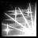

THE AMAZON
The Median XL: Ultimative amazon class is the fastest class in the game. Her ranged, melee and magical skills are powerful and focus on striking from a distance and moving at high speed.
BACKGROUND OF THE MEDIAN XL: ULTIMATIVE AMAZON
The inhabitants of the Amazon Islands are mostly known to the outside world as traders, warriors and seafarers. Few realise that amazon society is much more complex than is often assumed.
The faith of the amazon people was considered to be a triune religion centred around the ancient deities Hefaetrus, Karcheus and Zerae, each representing one of the elements of nature. In addition to the three major deities, there are also a pantheon of guardian gods and goddesses keeping watch over the cities, villages and even ships, the most famous of which being Athulua who protects the capital of the same name.
But as scholarly research into amazon history continued, more and more signs and relics of a dark past surfaced. There was once a thriving cult devoted to a fourth deity, Kharos, who represented death and warfare. The cult engaged in blood sacrifice and reigned for hundreds of years before it was banished into the rainforests by the ancient nephalem Philios, Skovos and Lycander, the first high priestesses of Hefaetrus, Karcheus and Zerae. After failing to teach the native people the worship of the three deities, the priestesses created the three islands bearing their name where they raised a race of warriors from ice, fire and thunder and founded the modern amazon culture.
After reconstructing this fragment of ancient amazon lore, scholarly attention turned to the fourth island, Skartara, which was formerly assumed to be uninhabited. But Skartara proved too much for even the toughest adventurers. Most research parties never even reached the island, swallowed by the treacherous maelstrom or smashed into the jagged cliffs of the island. The few survivors told terrible tales of giant flying reptiles, man-eating plants, head-hunting natives, the shapeshifting avatars of a savannah deity, wild blood orgies at full moon and worst of all, a living cult dedicated to bringing Kharos back to Sanctuary...
BASE STATS
Moves 10% faster than other classes.
Strength : 25
Dexterity : 25
Vitality : 20 (70 life)
Energy : 15 (15 mana)
+25 life, +15 mana per level
Gains +2 life per point into vitality
Gains +4.5 mana per point into energy
PREFERRED WEAPONS
Loremasters continue to be amazed by the cultural diversity on such a small island as Skartara and the way the local conditions shape tribal culture and development, even though the impressions and memories of the survivors may be tainted by the fact that their captain was lowered into a volcano and their priest eaten alive by a blood tribe.
The mountain regions are home to nomadic dragon archer tribes and the renmants of the ancient triple deity cults. The rocky cliffs and loose ground at the peaks of Skartara can be a much more dangerous foe than any opposing tribe. Mobility and distance are of the utmost importance, and many archers prefer to fight in light armour. It is said that the few surviving members of the triple deity cults have developed techniques to shoot through barriers and summon their many dead to fight for them.
Ritualistic tribal warfare of the lower savannah regions emphasises a combat technique known as the phalanx, where two opposing battlelines march up to each other until contact is made, then attempt to push, shove and ram a path through the other side. Warriors trained for this type of combat usually wield spears and wear heavy armour to augment their primarily defensive combat doctrine.
The swampy delta of the Skaryass river is home to several sites of moon worship located around 'moon springs', gas geysers that burn with an eerie white flame. The mud and water effectively makes melee combat impossible and battles are usually fought at a distance with assegais and throwing spears.
Priestesses of Kharos are often seen wielding enchanted sceptres to symbolise their status and authority in the blood cult. Only one sceptre has been retrieved by a particularly daring treasure hunter; unlike the finely crafted weapons of the other tribes, the sceptre was found to be of unremarkable construction and easy to recreate by any skilled spellsmith.
Priestesses of Zerae prefere to be in the midst od battle and weild the fury of storm against their enemies. Since their power relies on lightning more than any specific weapon, they don't have a specific preference, although many have been reported seen using a sceptre.
Base cast rate increased when wielding a staff, 2h mace, spear, scythe or 2h axes.
Class-specific 2h weapon: Amazon Bow
Class-specific 2h weapon: Amazon Spear (On hit: Mega Impact)
Also uses scepters
See THIS PAGE for more information about Mega Impact.
PREFERRED ARMOUR
The primitive inhabitants of Skartara are not particularly advanced in armourcrafting, except for the moonfuries of Skaryass. Due to the swampy marshes around the river delta, dodging thrown weapons is impossible and in response the moonfuries developed some of the toughest and heaviest mortal shields ever forged, including the legendary setzschild.
Some surviving explorers also brought specimens of the tribes' exotic headgear, from heavy steel cervellieres to the wicked einherjar helms worn by the wild devotees of Kharos when they consume the blood nectar and ride through the night sky on flaming horses to hunt for sacrifices. At least, that was what one particularly crazy and half-burnt survivor seemed to remember just after he downed several bottles of alcohol and before he screamed Kharos' name a hundred times and jumped overboard.
Most scholars agree, though, that this is probably a daytime event.
Class-specific shield: Amazon Shield
DEVOTIONS
Although there do exist roving mercenary bands that assimilate a variety of combat styles into their doctrine, most amazon warriors are faithful to their tribe.
You can only learn the level 18 skill of the bow, spear, javelin, blood or storm trees if you have no points in any of the other four skill trees, and vice versa.
FURY
On the savannahs of Skartara, speed is of the essence. The careful approach downwind of the herd, the wild dash at maximum speed, the decisive strike to kill the prey before it gets away or the herd turns the tables... a huntress lives her life five seconds at a time.
Spear amazons gain "Fury" when combining certain attacks, which increases attack and movement speed and empowers their other attacks.
SKILLS
| Name | Icon | Effect |
|---|---|---|
| BOW TREE | ||
| SUN STRIKE | For the few remaining devotees of the triple gods on Skartara, a warrior's life is too precious to waste. This arrow pierces through enemies with the fiery fury of Hefaetrus, leaving a small trail of fire behind. Effect: shoots a piercing fire arrow that leaves a trail behind | |
| BARRAGE | 
| In close combat, marksmanship is of less importance than the ability to quickly nock a large number of arrows and shoot blindly into the onrushing enemy hordes. Effect: shoots arrows in random directions |
| PHALANX | The renmants of the cult of the triple gods call upon the legions of their many dead to aid them in their struggle for survival. Effect: summons a line of spirit archers | |
| DRAGONLORE | The living gods Hefaetrus, Karcheus and Zerae aid and watch over she who bears a sign of her faith in the triple deities. Passive devotion effect: adds elemental damage if you have elemental items | |
| WYRMSHOT | 
| The dragon is the holy symbol of Hefaetrus, the indiscriminate god of fire and destruction. Arrows blessed by him don't even need to hit their targets to slay them. Effect: dragon-shaped arrow that shoots spines at enemies |
| SPEAR TREE | ||
| TAKEDOWN | One of the first techniques a tribal spearmaiden learns is to follow up an attack with a flurry of blows, keeping the enemy off balance and preventing counterattack. Effect: spear attack that raises attack speed and defense | |
| HYENA STRIKE | The spear of a veteran spearmaiden has spilled a lot of blood, some of it enchanted with the essence of life, some of it infected with wracking diseases that cripple or kill. Effect: attack that poisons the target and spawns a health orb | |
| POUNCE | The warrior of Ban-Seth unexpectedly leaps out of cover, taking her prey by surprise and delivering a quick death strike. Effect: teleport to target and strike nearby enemies | |
| LIONESS | 
| The spearmaiden completes her training in the temple of the lion queen Ban-Seth. Be warned, the Goddess of the Hunt demands total dedication to her path. Passive devotion effect: adds spear damage and defense |
| GREAT HUNT | The vultures of Skartara are attracted by the smell of blood and death. After bathing in the blood of her enemies, the high priestess of Ban-Seth may call upon a ravenous flock of the elusive birds. Effect: spear attack that unleashes a flock of magical vultures | |
| JAVELIN TREE | ||
| MOONBEAM | In the cannibalistic nightmare that is wild Skartara, the moon deity offers both inner peace and enhanced battle prowess. The path of the warrior and the priestess are inseparable. Effect: javelin that pierces and heals you while throwing | |
| RICOCHET | The swamps of Skartara do not offer much opportunity for a clear throw, so the warrior of the night needs to make every javelin count. Their indestructible mooncrystal tips enable the javelins to bounce off flesh and armor. Effect: javelin that bounces between targets | |
| ENFILADE | 
| An adept moonfury strikes faster than her shadow, throwing a rapid barrage of spears at her prey. Effect: press and hold button to throw a flurry of javelins |
| MOON QUEEN | Training in the moon temple further enhances the moonfury's combat skills. Her faithful often leave their tribe and worldly possessions behind for the teachings of the goddess, never to turn back again. Passive devotion effect: adds javelin damage and attack speed | |
| FAIRY RING | The spirits of the night reclaim the corpse of a fallen fiend, growing a witches' circle of bony mushrooms around the corpse that launch jagged spores. Effect: turns a corpse into a ring of effigies that attack enemies | |
| BLOOD TREE | ||
| MAGIC MISSILES |  | The priesthood of Kharos discovered a way to absorb the energies of the distant Worldstone, sending a flurry of magical shards towards the enemies of the tribes. Effect: cast multiple homing magical bolts |
| BALEFIRE | Kharos' gift manifests itself as a blast of eldritch green fire from the depths of hell that seems to consume even elemental fire creatures. But the death god's power comes at a price... Effect: stream of magical fire that costs life to cast | |
| BLOODSTORM | Tearing open a rift to the plane of death itself, the adept bloodwitch unleashes a torrent of searing blood and magma upon her enemies. Effect: demonic skull that shoots a barrage of bloodstars at enemies | |
| BACCHANALIA | 
| It is said that priests of Kharos engage in wild heathen rites of alcohol and self-mutilation to amplify their magical powers. Many more civilised mages wonder how they still manage to stand and cast spells afterwards. Passive devotion effect: increases life and improves spells when low on life |
| LAVA PIT | 
| Many of Kharos' rites involve human sacrifice, usually by cutting out the sacrifice's heart and lowering her into a lava lake. If the victim survives, she is anointed priestess of Kharos. Effect: targets an enemy and creates a pool of fire |
| STORM TREE | ||
| THUNDERCRACK | Zerae is the bride of Hefaetrus and her dominion is vengeance and storms. An Amazon warrior on a mission to right a great wrong will be empowered by the goddess with the ability to add the electrical power of the mighty hurricanes of the Southern Seas to her attacks. Effect: melee attack that causes lightning to arc through enemies | |
| STORMCALL | If an Amazon warrior has proven herself worthy, the goddess Zerae can empower her with the ability to strike down enemies by snatching bolts of lightning from the heavens. Effect: lightning strikes the earth and electrocutes nearby enemies | |
| HAMMER OF ZERAE | During rites of Vengeance, the Storm goddess will grant her devotees the power to charge their scepters to unleash wild bursts of electrical energy when thrown. Effect: throw an electrically charged mace that whirls around you | |
| ASTERISM | Through focus and intense devotion to Zerae an experienced Amazon warrior is able to channel the Goddess' might and lust for vengeance becoming one with the storm. Passive devotion effect: enhanced in storm, increasing your combat powers | |
| MAGNETIC FIELD | The High Priestesses will teach select few Amazons the secret of focusing the power of the goddess, consecrating a sceptre to become the ultimate weapon of vengeance. The energy contained within it is so powerful that it manifests itself as an expanse of deadly lightning. Effect: conjure a massive field of energy | |
| NEURAL TREE | ||
| WILD AND FREE | 
| Applying her knowledge of the terrain, an Amazon warrior may appear to move faster than the eye can see, seemingly striking from all directions at once. Passive effect: increases run speed and stamina |
| SUMMON FIRE ELEMENTALS | 
| It is a clear omen of the rising influence of Kharos on Skartara that many tribal warriors of other faiths have begun to commune with fire spirits to use their powers on the battlefield, surviving wounds no mere human should be able to. Effect: summons many small fire spirits with a healing ability |
| BALANCE | 
| An adept amazon warrior can enter a battle trance and listen to the whispers of the war spirits on the wind, warning her of incoming danger. Passive effect: adds points to defense rating |
| ECSTATIC FRENZY | Meditative prayer is a luxury reserved for civilised people, not the natives of Skartara. Their form of worship usually involves psychotropic substances and wild dances that invoke a raging battle fury in the reveler. Effect: caster gains attack speed and damage at the cost of defense | |
| DEFENSIVE HARMONY | 
| None shall surprise the amazon warrior and none shall attack first. A life among vicious beasts and cannibal tribes taught the amazons of Skartara the importance of having eyes on one's back. Passive effect: slows enemies that attempt to attack you |
UBERSKILLS
You may choose a single uberskill at character level 90.
| Name | Icon | Effect |
|---|---|---|
| CURARE | The master huntress coats her weapon or the heads of her arrows in virulent herbal poisons. Even those who manage to escape after a glancing blow will not run far. Passive effect: your weapon attacks poison the target | |
| PARAGON | 
| Donning the jewelry and regalia of a deity, the high priestess strides into battle, protected by the will and power of her gods. Passive effect: vitality bonus for each gem equipped |
| SPIRIT OF VENGEANCE | 
| These shadow spirits can often be found lingering at the site of a great battle. At the bloodwitch's call and with Kharos' help, this spirit of vengeance throws open the gates of death. Effect: corpse spirit that summons random revived monsters |
ENNEAD SKILL
After completing the Ennead Challenge and keeping the Class Charm in the inventory while at character level 90 and above, you can invest points in this skill.
See THIS PAGE for more information about the Ennead Challenge.
| Name | Icon | Effect |
|---|---|---|
| SPELLBIND | The basilisk snake of Skartara is a devious creature whose bite turns flesh to stone. A skilled amazon warrior may carry a few to the battlefield in a leather bag for an unexpected surprise. Effect: throws snakes that turn enemies to stone | |
BLACK ROAD SKILL
After completing the Black Road Challenge and keeping the Class Charm in the inventory while at character level 90 and above, you can invest points in this skill.
See THIS PAGE for more information about the Black Road Challenge.
| Name | Icon | Effect |
|---|---|---|
| WAR SPIRIT | Many of the amazon deities represent an aspect of war. The deity's spirits, summoned by an amazon high priestess or warrior queen, protect her in battle by striking down her enemies, seemingly out of nowhere. Effect: periodically emits spike novas that deal weapon damage | |
INNATE SKILL
Amazons start with the following skill in their icon list.
| Name | Icon | Effect |
|---|---|---|
| BLOODLUST | 
| Kharos' primal call to battle strengthens the resolve of the amazon and her allies, for the god of Death and Warfare is watching over them. Effect: increases damage and elemental damage of the party |